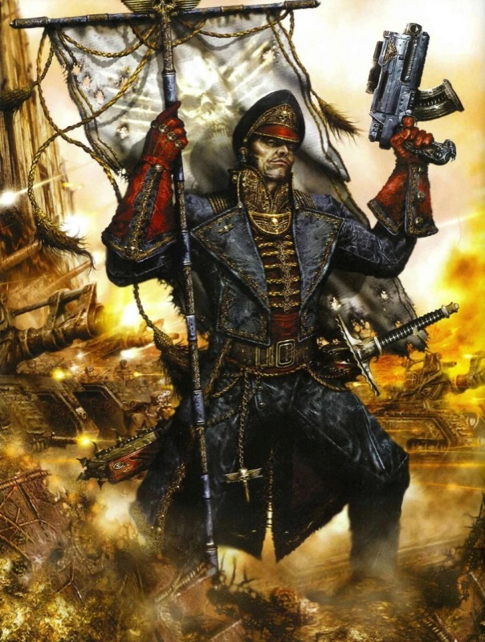

Ciaphas Cain
| Ciaphas Cain | |
|---|---|
| Commissar of the Officio Prefectus | |
 Commissar Ciaphas Cain, Hero of the Imperium Artwork © Games Workshop | |
| Commissariat service | |
| Tenure | c. 919.M41 to the early 42nd Millennium |
| Allegiance | Imperium of Mankind, Officio Prefectus |
| Regiments | Valhallan Ice Warriors (12th Field Artillery, 296th/301st, 597th) |
| Homeworld | Unnamed Hive world (recorded as unknown) |
| Aide | Ferik Jurgen |
| Known for | The Cain Archive; the defence of Nusquam Fundumentibus; the Gravalax Incident |
| Status | Died of old age in the 42nd millennium (c. 1st or 2nd century); still officially listed as on active duty |
Ciaphas Cain was a commissar of the Officio Prefectus who served with the Astra Militarum for most of the last century of the 41st Millennium. He is remembered as one of the most celebrated heroes of the Imperium of Mankind, although his own accounts describe a man more concerned with his survival than with glory. He was recalled to service during the 13th Black Crusade of Abaddon the Despoiler and was over two hundred Terran years old when recalled, and lived for more than a quarter of a century into the 42nd Millennium.[1]
Cain was unusual among commissars. He avoided the savage discipline for which the Commissariat was known and would not readily sacrifice his soldiers unless it served his own survival. Imperial propaganda nonetheless credited him with many victories. Cain tried to avoid combat, but his reputation as a hero repeatedly placed him in the most dangerous situations of his career. Records describe him as a skilled dissembler whose candour about his own failings was matched by an unusual modesty about his victories.[1]
Early life and training
[edit]Cain's record places his birth on an unnamed Hive world. He claimed that his parents died at the hands of Kroot while serving in the Astra Militarum, which was the reason he was sent to be trained as a commissar. Inquisitorial scholars doubt this account. No Hive world in the nearby sectors is known to have raised mixed-gender regiments in that period, and orphans from a petty criminal family were not normally admitted to a Schola Progenium. Cain's marks at the Schola were average, and his clean disciplinary record probably reflects skill at avoiding detection rather than good conduct.[1]
Service history
[edit]Cain began his service in 919.M41 as a commissar attached to the Valhallan 12th Field Artillery, and he soon took responsibility for the whole regiment. His first battle was on Desolatia, where the regiment held against Orks and then against a Tyranid splinter hive fleet. During that fighting Cain attempted to desert in a stolen Salamander and ran into a Hive Tyrant. His panicked report was later counted among his heroic deeds.[1]
In 924.M41 his escape pod crashed on Perlia behind Ork lines, and he was presumed dead. Cain raised an army from freed slaves and survivors of the planetary defence forces. He fought his way to the Imperial front and killed the Ork Warlord in single combat. The victory was recorded as the March of the Liberator.[1]
In 931.M41 Cain founded the 597th Valhallan Regiment from the remains of the 296th and 301st Valhallan regiments, one male and one female. He ordered that troopers from both be mixed in every squad. The same year he took part in the Gravalax Incident, where he first met Inquisitor Amberley Vail. Cain later described this as the affair in which his aide was found to be a Psychic Blank.[2][1]
In 942.M41 the 597th was sent to suppress an Ork outbreak on Nusquam Fundumentibus, where Cain had been on a mission two solar decades earlier. In pursuing the Orks he found a Tyranid swarm that had lain frozen in the ice for millennia, fed by a crashed Hive Ship. The hive ship was within hours of waking and calling a nearby hive fleet when Cain engineered its destruction.[3][1]
Cain's other recorded service included the pacification of Keffia, the defence of Slawkenberg against a sorceress, and, while assigned to Commissariat Command, missions in 928.M41 to the Necron Tomb World Interitus Prime, to Viridia and to Sanguia, the cleansing of a space hulk, campaigns against the Craftworld Aeldari, and the reclamation of Archipelaga. Of these he found the Necrons the most horrific. In 929.M41 he accompanied the Reclaimers Chapter aboard the strike cruiser ''Revenant'' to hunt the hulk ''Spawn of Damnation'' in the Serendipita System, and provoked a clash between its Genestealers and the Orks aboard it.[1]
Later campaigns included Simia Orichalcae (932.M41), Periremunda (933.M41), where Genestealers and a rogue Inquisitor were found behind a civil uprising, Adumbria (937.M41), where he assisted in defeating a Daemon Prince, and Lentonia (938.M41). On Lentonia he realised from Jurgen's quick healing that a revenant plague had a Warp component. The vaccine, once blessed by an Ecclesiarchy hierophant, proved effective.[1]
Later career and death
[edit]In the mid 900s.M41 Cain left regimental service to serve as Commissarial Liaison Officer on the staff of Lord General Zyvan. In 990.M41 he foiled a plot by T'au sympathisers to destroy Zyvan's flagship in the Deepwater System. In 991.M41 he took part in the defence of the Forge World Fecundia against a splinter of Hive Fleet Kraken. His suggestion that the node of a captured Tyranid bioship be broadcast through an astropath disrupted the Hive Mind's control over the whole system.[1]
Cain retired to Perlia, where he taught at a Schola Progenium, and he was recalled during the Second Siege of Perlia in 999.M41, in the 13th Black Crusade. He killed the Chaos Warmaster Varan, and the artefact the ''Shadowlight'', which Varan sought, was taken by a Necron scouting party.[4][1] He wrote both his public memoir, ''To Serve the Emperor: A Commissar's Life'', and the private Cain Archive in these years.[1]
Cain presumably died in the first or second century of the 42nd millennium and was buried with full honours as a Hero of the Imperium. He remains the only person on the active roster of the Astra Militarum after such a funeral. Several reports of his death had reached the Administratum before, most notably after his crash on Perlia, and the Departmento Munitorum issued standing orders that he be kept on the active roster regardless of any report. Imperial accounts state that the Imperium does not make mistakes, so Cain remains listed as on duty.[1]
A small sect among the Tallarn Desert Raiders regard Cain as a conduit of the Emperor's will, and a text of the Imperial Cult called the ''Book of Cain'' was written by a trooper, Alem Mahat, who witnessed his duel with the Daemon Prince Emili on Adumbria.[1]
Character and skills
[edit]Cain's heroic acts were, by his own admission, done reluctantly. He chose the 12th Field Artillery specifically to avoid the front line, and after Desolatia he complained that his commanders sent him into danger on the strength of his reputation. He was nonetheless an exceptional swordsman, and kept up his training with the chainsword. He could hit targets with a Laspistol well beyond its usual range, and he had a sense of direction underground that suggests an underhive upbringing. He hunted sorcerers and sorcerous cults without hesitation, since he judged that the only safety from Warpcraft lay in destroying its practitioners.[1]
He believed in the divinity of the Emperor but thought Him too distant to watch over individuals, and he had little patience for the overly pious. He disliked the title of Lord Commissar. He kept discipline lax, preferred warnings to punishments and tried to avoid executing soldiers, and his regiments kept high morale without losing effectiveness. His usual equipment was a commissar's greatcoat, a chainsword, a laspistol, a carapace breastplate and a Salamander scout vehicle, with his aide Ferik Jurgen as driver and bodyguard.[1]
The Cain Archive
[edit]Cain's private notes were organised by Inquisitor Amberley Vail and sequestered by the Inquisition in the early 42nd Millennium. Vail edited them with information from other sources, including the memoirs of Jenit Sulla (published 101.M42), and the result is known as the Cain Archive. Cain wrote the notes only to organise his own thoughts and expected them to be destroyed after his death. Vail's footnotes note that the archive is more candid than Cain's official published memoir, which was written for public consumption.[1]
Timeline
[edit]| Date | Event |
|---|---|
| 919.M41 | Begins service as a commissar with the Valhallan 12th Field Artillery; first battle on Desolatia |
| 924.M41 | Presumed dead on Perlia after his escape pod crashes behind Ork lines |
| 931.M41 | Founds the 597th Valhallan Regiment; Gravalax Incident |
| 937.M41 | Defeats a Daemon Prince on Adumbria |
| 942.M41 | Campaign on Nusquam Fundumentibus against Orks and a dormant Tyranid swarm |
| 991.M41 | Defence of Fecundia against Hive Fleet Kraken |
| 999.M41 | Second Siege of Perlia; the 13th Black Crusade |
| c. 42nd millennium | Dies of old age and is buried as a Hero of the Imperium (date not recorded) |
See also
[edit]References
[edit]- ^ a b c d e f g h i j k l m n o p q "Ciaphas Cain". Warhammer 40k Wiki (Fandom). Sections on the Cain Archive and service history.
- ^ Mitchell, Sandy. For the Emperor (novel). Black Library.
- ^ Mitchell, Sandy. Caves of Ice (novel). Black Library.
- ^ Mitchell, Sandy. Cain's Last Stand (novel). Black Library.
Further reading
[edit]- Mitchell, Sandy. For the Emperor, Caves of Ice, The Traitor's Hand, Death or Glory, Duty Calls, Cain's Last Stand, The Emperor's Finest, The Last Ditch and The Greater Good (novels). Black Library.
- Mitchell, Sandy. Old Soldiers Never Die (novella); Traitor's Gambit (short story); Dead in the Water and The Devil You Know (audiobooks). Black Library.